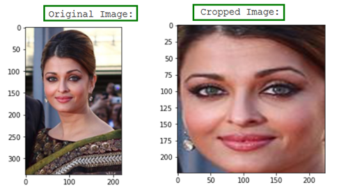
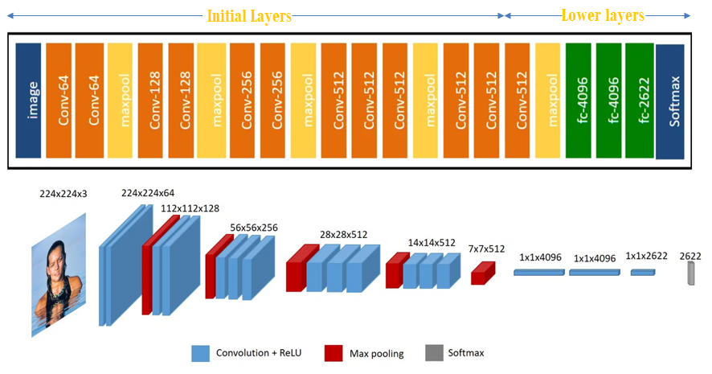
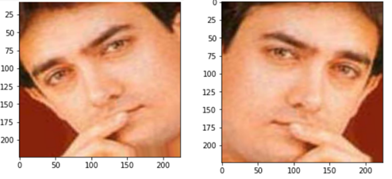
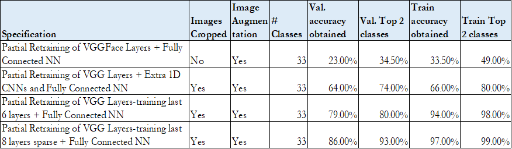
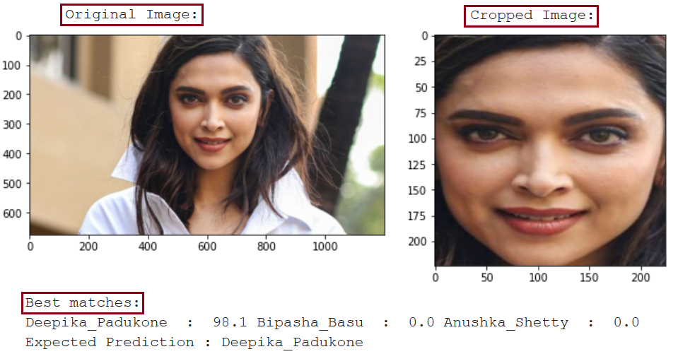
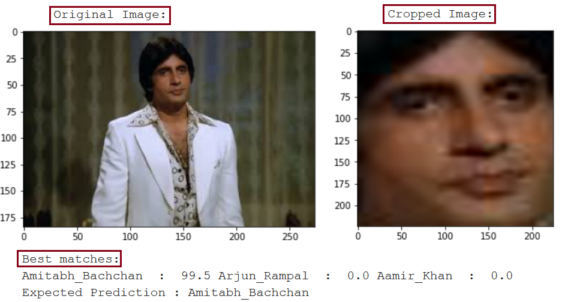

Which celebrity do you resemble ?
Project submitted as a part of Harvard Extension Program requirementMain Idea
The project mainly deals with Transfer Learning of the VGGFace model, which identifies 2622 different faces with high accuracy. The project also evaluates the performance of techniques like: ▪ Image Augmentation ▪ Face cropping ▪ Freezing weights of different layers in the VGGFace model ▪ Different classifier architecture on top of VGGFace model
Goal
Goal of the project is to apply ‘Deep Learning’ techniques to recognize celebrity faces. During the training phase the model tries learns features important to recognize different faces based on the training data provided. Using the trained model, the model produces the top 3 celebrity matches for a new input image. This project can also answer the question ‘which celebrity do you resemble?’ The project can be modified to produce a model similar to the ‘Face ID’ by Apple Inc.
Dataset
The dataset used during training is available publicly in Kaggle. The dataset consists of 33 celebrities with approximately 100 images for each celebrity. Fig. 1 shows the sample images from the dataset used during training.
Python 3 was utilized for development of the code.
Make sure below packages are installed:
▪ Keras 2.3
▪ Tensorflow 2.2
▪ MTCNN
All other packages come pre-install with google colab.

Hardware and Software
The project was run on Google Colab with a GPU setting (Tesla p100). Although it is not required to run on GPU, running the code on GPU reduces training time. Python 3 was utilized for development of the code. Make sure below packages are installed: ▪ Keras 2.3 ▪ Tensorflow 2.2 ▪ MTCNN All other packages come pre-install with google colab.
Technique: 1) Face Detection
Identify human faces in an image. Create a bounding box around the face. Check out the example by the package developer. Face detection example from our project. 
Technique: 2) Transfer Learning
Fine tune a Pre-Trained mode. Freeze weights of initial layers and fine tune weights of layers near the output. VGG Face(Model built to classify 2622 faces) architecture presented below. Original visualization from this article. 
Technique: 3) Image Augmentation
Performed to: ▪ Reduce overfitting ▪ Increase size of training dataset 
Model performance
▪ 86% validation accuracy ▪ 93% validation accuracy for top 2 classes Accuracy obtained by performing various techniques: 
Results
Example 1: ▪ Model correctly predits the celebrity  Example 2: ▪ Tolerant to age? ▪ The model correctly predicts the celebrity, even though the input image was a much older picture of the celebrity. 